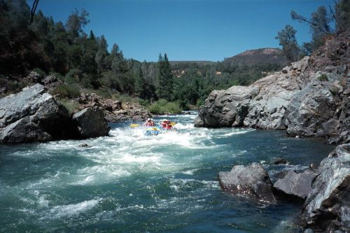
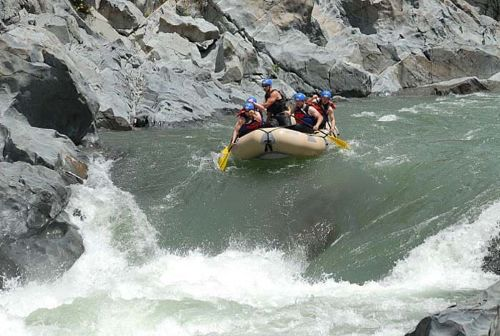
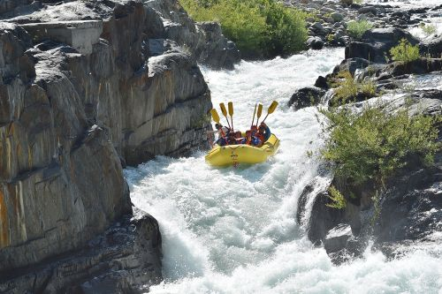

Join us on Whitewaters
Whitewater Rafting offers trip services to guest. for more information, visit the Contact Us page for more information.
Highlighted Trips
South Fork American
This is the most popular rafting river in California for families and beginner groups. Splashy, exciting rapids with long, calm pools perfect for swimming and soaking in the sun.
North Fork American
A trip for more experienced rafters. These rapids showcase nature's feirce waves, requring precise teamwork to navigate between bolduers, tight chutes and an 8 foot drop.
Middle Fork American
This trip is best suited for adventure seekers looking for a remote thrill. Known for its deep, 2,000-foot canyon, this trip feels like a true escape from civilization.
Whitewater trips table
| Trip | Difficulty | Best Season | Ideal for |
|---|---|---|---|
| South Fork American | Class ll-lll | April-Sept | Kids(8+), First-timers |
| Middle Fork American | Class lll-IV | May-Sept | Adrenaline, Seanic Beauty |
| North Fork American | Class IV+ | April-Sept | Expert-level, Spring Runoff |
| Tuolumne River | Class IV+ | April–Sept | Advanced paddlers, Multi-day |
| Lower Klamath/td> | Class II | May – Sept | Young kids (4+), Multi-day camping |
While some rivers are dam-controlled others depend entirely on snowmelt. For those rivers, it is best to book between April and early June for the best flows.
Whitewater classification table
| Class | Difficulty | Skill Level |
|---|---|---|
| Class I | Easy | Beginner. No experience needed. Relaxing float. |
| Class II | Novice | Beginner. Great for families with young children. |
| Class III | Intermediate | Active Beginner. Requires paddling; "splashy" and exciting |
| Class IV | Advanced | Intermediate. High adrenaline; strong swimming ability recommended. |
| Class V | Expert | Advanced. High physical fitness and prior rafting experience usually required. |
| Class VI | Extreme | Pro/Teams Only. Not offered by commercial rafting companies. |